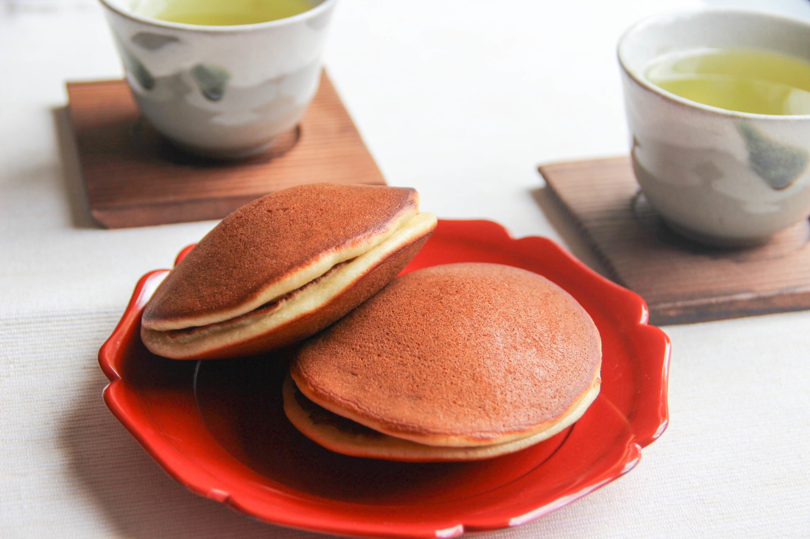

Dorayaki

Description
Dorayaki is a popular Japanese confectionary consisting of sweet red bean paste sandwiched between sweet pancakes.
Legend has it that the first Dorayaki were made when a samurai named Benkei forgot his gong (dora) upon leaving a farmer’s home where he was hiding, and the farmer subsequently used the gong to fry the pancakes.
Ingredients
- 5/4 cup all-purpose flour
- 1 tsp baking soda
- 2 eggs
- 1/2 cup sugar
- 1 tbsp honey
- 3/4 cup milk
- Anko (sweet red bean paste)
Steps
- Mix flour and baking soda in a bowl.
- In another bowl, whisk eggs, sugar, and honey together. Add milk and mix well.
- Stir dry ingredients into egg mixture, and whisk until batter becomes smooth.
- Heat non-stick frying pan with a small amount of oil and wipe excess oil well. At medium low heat, drop 1/8 of a cup of batter onto the pan, like a pancake. Cook about 2 minutes until the surface of the pancake has a lot of bubbles and the edges become dry. Flip over and cook 1 more minute.
- Transfer to a plate and cover with a wet paper towel.
- Take one cake and place a heaping tablespoon of Anko and cover with another cake. Wrap it with plastic and press with hands. Pinch to seal the edges of the pancakes together.
Source
Main Page
Made by Albert Zhan